Oh… Hi Minos!! Everyone… say hi to Minos! He’s the monster that lurks on the border of the second circle, who basically assigns the condemned souls to their punishments!
If you look closely, the amount of times he wraps his tail around himself indicates the number of circle the soul must go… pretty cool huh?
Anyways… welcome to the second circle,
Hope everyone brought a little raincoat!! Haha…. The souls of the Lustful swirl about in a terrible… TERRIBLE storm. They are punished by being blown violently back and forth by strong winds, preventing them from finding peace and rest…. Kinda funny to me haha…
Being the good tour guide I am, I’ll explain the intentions of the strong winds. The strong winds symbolize the restlessness of a person who is led by the desire for fleshly pleasures. So… if any of ya’ll fear the storm… remember not to commit adultery! Haha!!
Ooh you guys sure are lucky today! There you can see Francesca, Cleopatra, and Helen of Troy…. Everyone say hi!!
  Okay okay… that’s enough…. Before they seduce y’all, let’s enter the next circle this way!